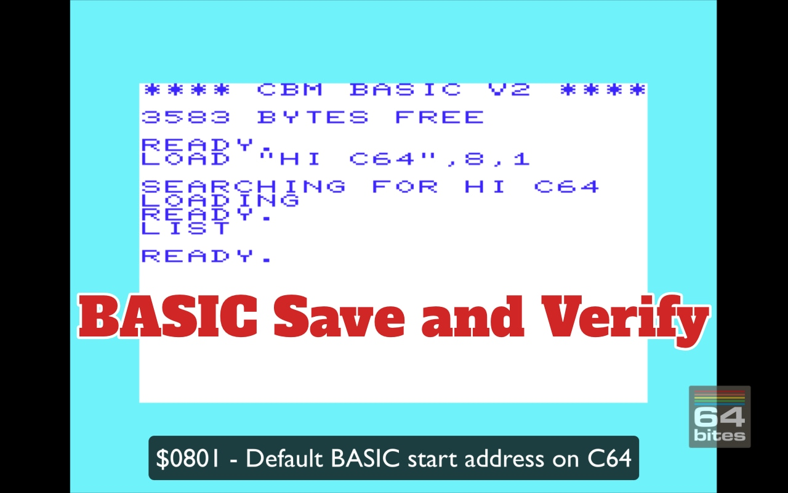
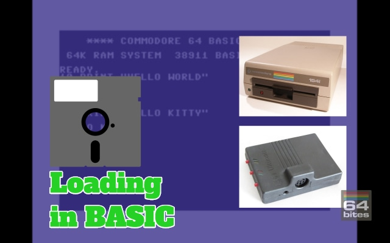
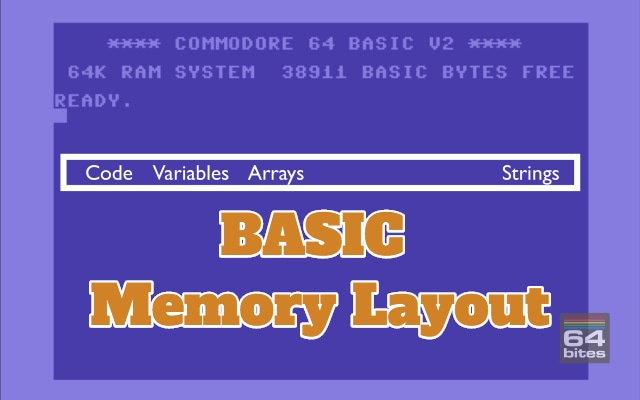
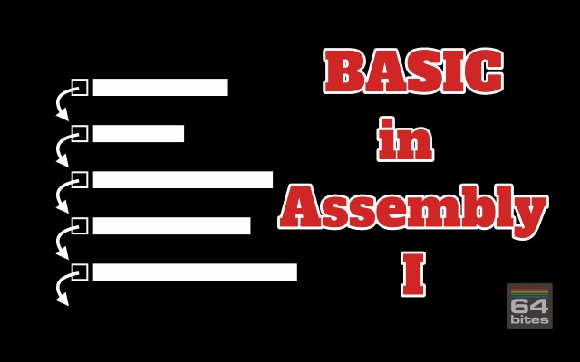
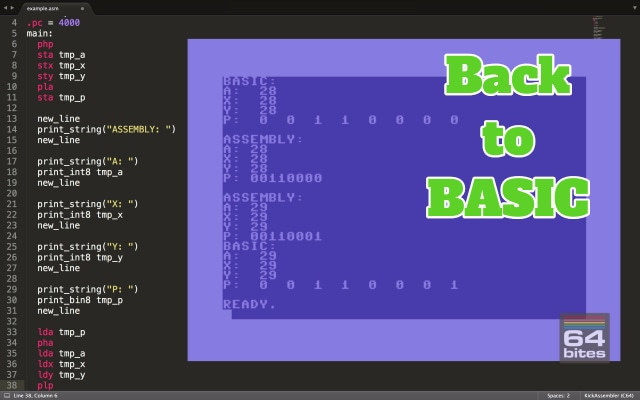

The easiest way to start programming Commodore 64
Learn BASIC and 6502 Assembly with bite-sized video tutorials.
Binge-watch previous episodes today!
Season 12 - BASIC, LOAD, SAVE
This is an ongoing season (some videos are not yet released!)
When you buy this season you will receive a package with 5 already released episodes.
Remaining 4 will be sent to you without any additional charges as soon as they are ready.
Here's what you will get
- 9 videos (50+ minutes in total)
- transcripts (13000+ words)
- source code examples (10000+ LOC)
- access to 64bitesVIP Facebook group, where you can get help
- plenty of exercises to solve on your own
- online streaming
- download with no DRM
- one time payment (no monthly/annual fees)
See what others are saying!
I learned assembly the hard way, with only limited documentation. Although part of the fun is in discovering all these things yourself, I think such screencasts could have helped me in getting up to speed faster. They do contain some nice bits of information :)

- Paul Koller
Game Developer, Creator of C64anabalt, Super Bread Box and Micro Hexagon
64bites brings me closer to understanding a computer I learned to love long ago, and still do. More than anything, it is really fun to follow the lessons and I always look forward to the next episode with great anticipation. It is the best thing since chocolate.
I enjoyed both narration and realisation.
Actually, I was really shocked to have so much fun watching a programming screencast!

- Robert Lapinski
CEO of Idea Head, Mastermind behind the Pixel Magazine
How much time did you spend playing games on your Commodore c64? 64bites is more than 8-bit childhood memories, its a way to keep your beloved C64 alive, let's make our own game with it.

- Andrzej Śliwa
Polyglot Programmer, Lead Developer at bonusbox GmbH
This is really cool. I don't know exactly how popular it will end up being, but there is always room online for things like this.

- Peter Cooper
Founder at Cooper Press, Chair of O'Reilly Fluent Conference
Having watched a few episodes, I reiterate my original position: sooooooo coool. And Michal have really done a top-notch job on writing, production, audio, everything.
All Episodes in this Season

Episode #105 - BASIC SAVE & VERIFY
In this episode we'll learn how to save and verify BASIC programs on both C64 and VIC-20. 
Episode #104 - Loading in BASIC
Today we will learn about different modes of the BASIC load command. How to display the directory, and why it even works, and how to load BASIC and Assembly programs from a disk drive. 
Episode #103 - BASIC memory layout
When we turn the Commodore 64 on it greets us with an information about how many bytes are free for BASIC programs. But not all of it can be used for the code. As soon as we introduce variables, arrays or do operations on strings the interpreter needs to allocate memory for them as well. Today we'll take a closer look at the memory layout of BASIC programs, and what happens when the program grows.
Episode #102 - BASIC in Assembly II
In this episode, we take a look at the tokenization process. It is a routine that converts BASIC keywords and commands into single-byte values, called tokens. This happens automatically when we type a new line of a program. But if we want to inject the program directly into the memory, we need to do tokenize keywords ourselves. We also learn how to help the KickAssembler compiler determine addresses of labels in complicated situations. 
Episode #101 - BASIC in Assembly I
When we type programs in BASIC, they are pre-processed and saved into the memory, to be interpreted later. Now imagine we don't need to type them anymore. What if we could write their contents directly into the memory alongside our assembly program. Well, that's what we are going to do in this episode. 
Episode #100 - Back to BASIC
It is time to get back to BASIC and take a closer look at the SYS instruction. We used it all the time to run our assembly programs. But it can do much more than that. Did you know that we can use it to pass information between BASIC and assembly programs?3 remaining episodes will be released in following weeks.
If you buy the season now, you will get videos as soon as they are out without paying anything extra.